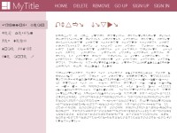
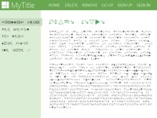
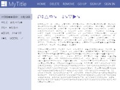
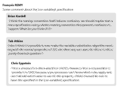

Copyright © 2012 W3C® (MIT, ERCIM, Keio), All Rights Reserved. W3C liability, trademark and document use rules apply.
CSS is a language for describing the rendering of structured documents (such as HTML and XML) on screen, on paper, in speech, etc. This module contains the features of CSS level 3 relating to custom properties. It includes and extends the functionality of CSS level 2 [CSS21], which builds on CSS level 1 [CSS1]. The main extensions compared to level 2 are the introduction of token stream as a new primitive value type that is accepted by all properties, as well has a new family of inherited properties called custom properties whose value can be any valid CSS token list.
This is a public copy of a proposal draft. It is provided for discussion only and may change at any moment. Its publication here does not imply endorsement of its contents by W3C. Don't cite this document other than as work in progress.
The (archived) public mailing list www-style@w3.org (see instructions) is preferred for discussion of this specification. When sending e-mail, please put the text “css-variables” in the subject, preferably like this: “[css-variables] …summary of comment…” ”
This document was produced by the CSS Working Group (part of the Style Activity).
This document was produced by a group operating under the 5 February 2004 W3C Patent Policy. W3C maintains a public list of any patent disclosures made in connection with the deliverables of the group; that page also includes instructions for disclosing a patent. An individual who has actual knowledge of a patent which the individual believes contains Essential Claim(s) must disclose the information in accordance with section 6 of the W3C Patent Policy.
This section is not normative.
Modern documents and applications contain a significant amount of styling information, often spread across numerous related stylesheets. By their nature, they describe important implicit design relationships. For example, most sites design a pallette consisting of a small number of colors or font treatments which are used repeatedly in numerous rules, targeting disparate pieces of the tree. Today, the intended link between those values is often lost, values are repeated, making altering this data difficult and error-prone.
Each of these related values, in concept, points to a single virtual CSS value. Until now, however, the link between them has never materialized in expressive terms. One of the goals of this module is to make factual this link by introducing the concept of reference in CSS.
To accomplish those goals, this module introduces a new family of properties known collectively as custom properties, which allow an author to assign arbitrary values to a property with an author-chosen name. This module also introduces property references, a mechanism which allows an author to reuse the value of those properties into other CSS properties.
Thus, what were previously arbitrary seeming values (like #cfcfff) may now have informative names (like my-primary-color). This makes authoring and editing such files much easier and less error-prone, as one only has to change the value once, at the property declaration site, and the change will propagate to anywhere that property is referenced automatically.
The example below demonstrates how custom properties and property references allow the author to adapt the design of websites easily. Imagine a common use in which a website has a variant color scheme depending on the section, but share all share a common layout (illustrated by the following picture):
  
Custom properties and references allow the author to express these relationships variably and thus efficiently manage the CSS:
/* red color scheme (default) */
@document url-prefix("http://example.com/") {
html {
my-dark-color: #770000;
my-light-color: #ffdddd;
my-color: #eebbbb;
}
}
/* green color scheme */
@document url-prefix("http://example.com/green-section") {
html {
my-dark-color: #007700;
my-light-color: #ddffdd;
my-color: #bbeebb;
}
}
/* blue color scheme */
@document url-prefix("http://example.com/blue-section") {
html {
my-dark-color: #000077;
my-light-color: #ddddff;
my-color: #bbbbee;
}
}
/* website styling */
header { background-color: $(my-dark-color); }
nav { background-color: $(my-light-color); }
nav .selected { background-color: $(my-color); }
h1 { color: $(my-dark-color); }
…
Additionally, this module aims to provide a way for authors to share custom styling information to their HTML components and in the shadow tree of elements in a way that does not interfere with browser-provided properties.
This design also brings a new tool for Web authors to shim unimplemented CSS properties in a forward compatible manner by guaranteeing that new native implementations will never overlap with their own implementation.
The example below illustrates how an author can use custom properties and property references to shim properties on their own HTML components:
<style>
.no-toolbar { my-toolbar-display: none }
</style>
<my-property-editor
data-for="document.body"
class="no-toolbar"
/>
In the shadow tree style of the <my-property-editor>
element, the following CSS could be used:
#toolbar { display: $(my-toolbar-display); }
This works because custom properties are inherited across the shadow tree boundaries.
This module defines a new type of primitive value, the token stream reference, which is accepted by all properties anywhere one or more tokens are required or accepted.
This specification follows the CSS property definition conventions from [CSS21]. Value types not defined in this specification are defined in CSS Level 2 Revision 1 [CSS21]. Other CSS modules may expand the definitions of these value types: for example [CSS3COLOR], when combined with this module, expands the definition of the <color> value type as used in this specification.
A token stream is a dynamic list of CSS tokens, as defined in the CSS2.1 Chapter 4 specification or in the CSS Syntax specification [CSS3-SYNTAX] when it will reach the W3C Recommendation status. To be valid, a token stream must conform to the <value> type (a token stream which doesn't conform is called an invalid token stream).
Given the <value> type definition, an empty token stream represents an invalid token stream.
A token stream is generally best described by its list of tokens, its attachment (the object it belongs to) and its scope (the locations where it can be referenced).
A token stream reference is a set of CSS tokens used in a property declaration to reference a token stream and, optionally, an second token stream called the fallback value.
At computed-value time, token stream references are substituted for the tokens contained in their referenced token stream or, if it is invalid, for the tokens of their fallback value.
In this example, the syntax of an hypothetical token stream reference is explained.
p { property: $attachment(token-stream-name, fallback value); }
The '$' token indicates the start of a token
stream reference (see The $ Prefix
section).
The 'attachment' token represent the attachment
of the token stream.
The 'token-stream-name' token represent the
name of the token stream.
The 'fallback value' tokens represent the
fallback token stream of the reference.
If the referenced token stream contained the 'value'
token, the previous declaration is equivalent to:
p { property: value; }
If the referenced token stream is invalid, the previous declaration is equivalent to:
p { property: fallback value; }
If a declaration, once all token stream references are substituted in, is invalid, then the declaration is invalid at computed-value time.
For example, the following usage of a property reference is fine from a syntax standpoint, but results in nonsense when the token stream reference is substituted in:
:root { my-length: 20px; }
p { background-color: $(my-length); }
Since ‘20px’ is an invalid value for ‘background-color’,
this instance of the property computes to ‘transparent’
(the initial value for ‘background-color’)
instead.
As noted before, in addition to a reference to a token stream, token stream references can also contains a fallback value that can be used if the referenced token stream is found to be not appropriate for the purpose it has been used for.
THE FOLLOWING FEATURE IS AT RISK
Whenever a token stream reference specifies a fallback value, that value should be valid for the purpose it has been used for. If this is not the case, the token reference invalidates the declaration that contains it. If it is impossible to check if the provided fallback value is valid or not (for example because another token stream reference inside the same declaration has no fallback value provided), the declaration is considered valid.
To summarize: In order to be considered valid, a declaration containing one or more token stream references must either: a) contain at least one reference which provides no fallback value -OR- b) must be valid when all property references are replaced by their fallback value.
Given the following CSS file, a conforming user agent should display each matching DIV element with a white text over a green background.
div {
my-background-color: green;
my-foreground-color: white;
my-secondary-color: red;
color: $(my-foreground-color); // valid
color: $(my-secondary-color, 10px); // invalid
background-color: yellow; // valid (overridden)
background-color: $(my-background-color, blue); // valid
}
The rationale behind this restriction is to allow proper fallback for unsupported features.
.selector {
background: $(my-bg-color);
background: $(my-super-cool-bg, unsupported-feature(...));
}
The second declaration of the 'background' property will probably be discarded by the user agent because it doesn't understand the 'unsupported-feature()' function. In this case, the background will use the 'my-bg-color' custom property value.
THE PREVIOUS FEATURE IS AT RISK
A token stream reference can be used in place of any component value, in any property declaration.
This specification doesn't define a way to use token stream references anywhere else. An UA conforming to this specification should not accept token stream references in property names, in selectors, or anywhere else besides property values - doing so either produces either an invalid value or a valid value that nonetheless has no relation to the property of that name.
The exact syntax of some token stream references is defined in the Chapter 3 of this specification.
This specification defines an open-ended set of properties called custom properties, which can be used as token streams. Custom properties are author-defined properties which do not have any direct impact on the document rendering or behavior but can be used indirectly (by reference) as values to other CSS properties.
Future revisions of this specification, may or may not allow any CSS property to be used as a token stream.
| Name: | my-* |
|---|---|
| Values: | <value> |
| Initial: | (nothing, see prose) |
| Applies To: | all elements |
| Inherited: | yes |
| Computed Value: | specified value with token stream references substituted (but see prose for "invalid token streams") |
| Media: | all |
The <value> type used in the syntax above is defined as anything matching the "value" production in CSS 2.1 Chapter 4.1 [CSS21]. This puts only a few restrictions on what kinds of values you can store in custom properties. Obviously, any valid property value or component of a property is allowed. Additionally, it allows things that are not yet valid CSS values, like unknown keywords or functions, blocks, at-rules, and other kinds of custom micro-syntaxes (for example, what is allowed in calc()). However, as the production has to be valid CSS, some restrictions apply.
For example, unbalanced parentheses are always invalid.
The term custom property refers to any property whose name is composed of a "my-" prefix followed by something matching the IDENT production in CSS2.1 Chapter 4.
The initial value of a custom property is an empty invalid value. This means that, until a custom property is explicitly defined otherwise by a style sheet, it defines an invalid token stream.
Custom properties are defined to be valid but meaningless as they are meant solely for allowing authors to pass custom data around their page, similar to the custom data attributes in HTML. Other specifications and user agents must not assign a particular meaning to custom properties or attach a specific effect to them beyond the bare minimum that comes from them being valid properties.
A custom property declaration defines a token stream whose attachment is the element the declaration applies to and whose scope is the element itself and all its descendants. This means that for each custom property, there is an associated token stream with the same name. See the next chapter for details on how to reference those token streams.
This style rule:
:root {
my-header-color: #06c;
}
declares a custom property named "my-header-color" on the root element, and assigns to it the value "#06c". This property is then inherited to the elements in the rest of the document. Its value can be referenced via an appropriate:
h1 { color: $(my-header-color); }
The preceding rule is equivalent to writing ‘color:
#06c;’, except that the name makes the origin of the color
clearer, and if ‘$(my-header-color)’ is used on
other elements in the document, all of the uses can be updated at once
by changing the ‘my-header-color’ property
on the root element (since all are descendants of :root).
This change can happen after the document is already loaded, for example in reaction to a media query change, as the user selects an alternate style sheet or as a result of an action performed in script.
Custom properties are ordinary properties, so they can be declared on
any element, are resolved with the normal inheritance and cascade rules,
can be made conditional with ‘@media’ and other
conditional rules, can be used in HTML's style attribute,
can be read or set using the CSSOM, etc..
If a custom property is declared multiple times, the standard cascade rules help resolve it. Property references always draw from the computed value of the associated custom property on the same element:
:root { my-color: blue; }
div { my-color: green; }
#alert { my-color: red; }
* { color: $(my-color); }
<p>I inherited blue from the root element!</p>
<div>I got green set directly on me!</div>
<div id='alert'>
While I got red set directly on me!
<p>I'm red too, because of inheritance!</p>
</div>
Custom properties may use property references in their own values to build up composite properties. As this can create cyclic dependencies where two or more custom properties each attempt to use a reference to each other, doing so makes all the custom properties involved in the cycle compute to their initial value (which is a guaranteed-invalid value).
This example shows a custom property safely using a property reference:
:root {
my-main-color: #c06;
my-accent-background: linear-gradient(to top, $(my-main-color), white);
}
The ‘my-accent-background’ property
(along with any other properties that use ‘$(my-main-color)’)
will automatically update when the ‘my-main-color’
property is changed.
On the other hand, this example shows an invalid instance of custom properties depending on each other:
:root {
my-first-property: calc($(my-second-property) + 20px);
my-second-property: calc($(my-first-property) - 20px);
}
Both ‘my-one’ and ‘my-two’
now define invalid token streams
rather than lengths.
It is important to note that custom properties resolve any token stream reference in their values at computed-value time, which occurs before the value is inherited. In general, cyclic dependencies occur only when multiple custom properties on the same element refer to each other; custom properties defined on elements higher in the element tree can never cause a cyclic reference with properties defined on elements lower in the element tree.
For example, given the following structure, these custom properties are not cyclic, and all define valid token streams:
<one><two><three /></two></one>
one { my-foo: 10px; }
two { my-bar: calc($(my-foo) + 10px); }
three { my-foo: calc($(my-bar) + 10px); }
The <one> element defines a value for ‘my-foo’.
The <two> element inherits this value, and additionally assigns a
value to ‘my-bar’ by referencing
<one>'s ‘my-foo’ property. Finally, the
<three> element inherits the ‘my-bar’
value after token stream substitution (in other words, it sees
the value ‘calc(10px + 10px)’), and then
redefines ‘my-foo’ in terms of that value.
Since the value it inherited for ‘my-bar’
no longer contains a reference to the ‘my-foo’
property defined on <one>, defining ‘my-foo’
using ‘$(my-bar)’ is not cyclic, and actually
defines a value that will eventually (when referenced as a token stream
in a normal property) resolve to ‘30px’.
...
When used as or in a value production, the dollar glyph indicates that what follows is some form of token stream reference.
In this informative example, the syntax of an hypothetical token stream reference is explained.
p { property: $attachment(token-stream-name, fallback value); }
The '$' token indicates the start of a token
stream reference.
The 'attachment' token represent the attachment
of the token stream.
The 'token-stream-name' token represent the
name of the token stream.
The (optional) 'fallback value' tokens
represent the fallback token stream of the reference.
If the referenced token stream contained the 'value'
token, the previous declaration is equivalent to:
p { property: value; }
If the referenced token stream is invalid, the previous declaration is equivalent to:
p { property: fallback value; }
In future iterations of this spec, we may want to provide more complex features for the $ prefix, like conditional token stream references or token stream decorators. This is one of the reasons why the $ prefix is not soldered with the custom property name in the declaration.
.browser-lang { content: ${navigator.language}; }
.custom-syntax { property: ${abc|def|ijk}; }
Please note this is an informative box which is not indicative of any
endorsement of the syntax nor of the utility of the specified use cases.
This is just a reminder we may want to expand the syntax of token stream
references in the future.
A property reference is a token stream reference that allows the value of a custom property defined on an element to be substituted into another property which has access to it.
$()’ notationFormally, the syntax of a property reference is:
<ref> = "$" "(" IDENT [, <value> ]? ")"
...where IDENT is anything matching the IDENT production in CSS2.1 Chapter 4 and corresponds to the name of the referenced custom property.
For example, the following code defines and uses a custom property named "my-main-color".
:root {
my-main-color: blue;
}
h1 {
color: $(my-main-color);
}
In some cases, it can be useful to provide a fallback value for a property reference in case the referenced property isn't defined or is invalid.
For example, if a site uses custom properties to provide "hooks" for customization, expecting the custom property to be defined in a separate custom stylesheet, the main stylesheet can use default values for its property reference so that the theming stylesheet can just override the properties it cares about, rather than being forced to provide values for all of them.
The fallback value of the ‘$()’ notation is its
second argument.
If the custom property named by the first argument is inherited or
declared on the element it applies on, its token stream's value is
substituted as normal. If it's invalid, and a second argument was
provided, then the value of the second argument is substituted instead.
Otherwise, the ‘$()’ represents an invalid
token stream.
$inherit()’ notation Several advanced use-cases for custom properties need the ability to
reference the value that a property has on the parent element, rather than
on the element itself. This can be accomplished with the ‘$inherit()’
notation:
<inherit-ref> = $inherit( IDENT [, <value> ]? )
If the element has a parent, and the custom property named by the first
argument is valid on the parent, the property's value on the parent is
substituted as normal. Otherwise, if a second argument was provided, the
value of the second argument is substituted instead. Otherwise, the ‘$inherit()’ represents an invalid
token stream.
For example, ‘$inherit()’
can be used to implement a behavior that's very similar to the ‘toggle()’
notation from [[CSS3VALUES]].
In this example, each nested comment alternates between a white and
silver background (as in the picture floating to the right).
<div class='comment'>
<div class='main'>
...
</div>
<div class='actions'><a>Reply</a> <a>Comment</a> ...</div>
</div>
<div class='comment'>
<div class='main'>
<div class='comment'>
<div class='main'>
...
</div>
<div class='actions'><a>Reply</a> <a>Comment</a> ...</div>
</div>
</div>
<div class='actions'><a>reply</a> <a>Comment</a> ...</div>
</div>
<style>
.comment {
my-bg: $inherit(my-bg2, white);
my-bg2: $inherit(my-bg, silver);
background: url(comment.png) $(my-bg);
}
</style>
The ‘toggle()’ notation can't be used here,
because ‘background-color’ isn't inherited
(and thus the nested comments see the initial value of ‘transparent’
rather than ‘white’ or ‘silver’).
Even if the author explicitly sets ‘background-color:inherit’
on <div class='main'> so that ‘toggle()’
can actually see the right value, that will make the ".main" elements
cover up the ‘background-image’ that
".comment" has on it as well.
Because custom properties don't have any effect on rendering until they're used, they can pass these values through the document without these kinds of side effects.
The ‘$()’ notation can't be used here either
as it would immediately produce a cycle between 'my-bg'
and 'my-bg2', making them both invalid.
When a custom property has its initial value, the token stream it defines represents an invalid token stream.
Using an invalid token stream in a property declaration (including other custom properties declarations) makes the declaration invalid at computed-value time.
A declaration can be invalid at computed-value time if it uses an invalid token stream reference, as explained above, or if it uses a valid token stream reference, but the property value, after substituting its token stream references, is invalid. When this happens, the computed value of the property is either the property's inherited value or its initial value depending on whether the property is inherited or not, respectively.
For example, in the following code:
:root { my-bad-color: 20px; }
p { background-color: red; }
p { background-color: $(my-bad-color); }
the <p> elements will have transparent backgrounds (the initial
value for ‘background-color’), rather than
red backgrounds. The same would happen if the reference itself was
invalid.
Note the difference between this and what happens if the author had
just written ‘background-color: 20px’ directly
in their stylesheet - that would be a normal syntax error, which would
cause the rule to be discarded, so the ‘background-color:
red’ rule would be used instead.
The invalid at computed-value time concept exists because token stream references can't "fail early" like other syntax errors can, so by the time the user agent realizes a property value is invalid, it's already thrown away the other cascaded values.
Custom properties are ordinary properties, and can be read or modified using all of the existing CSSOM APIs for reading or modifying properties.
The specification extends the IDL definitions in the CSSOM spec to
represent the use of the ‘$()’ and '$inherit()'
functions.
The CSSPropertyReference interface represents an use of property token stream.
[[NoInterfaceObject] interface CSSPropertyReference {
attribute DOMString providerName;
attribute DOMString propertyName;
attribute any fallbackValue;
readonly attribute any providedValue;
}
providerName of type DOMString propertyName of type DOMString fallbackValue of type any providedValue of type any, readonly providerName property. If the
providerName doesn't map to any defined provider or if
the provider can't return a value given the propertyName arguments
it received, the value of this attribute is guaranteed to be null.CSSStyleDeclaration Interface The set of custom properties is open-ended, so it's not
clear how best to represent this. Ideally, the CSSOM would expose the
current set of properties with a non-initial value and allow setting of
arbitrary properties. The most natural way seems to be to first, set up a
getter behavior on the interface somehow that deals with custom
properties, and second, set up a my map that exposes the
custom properties that aren't set to their initial value.
Conformance requirements are expressed with a combination of descriptive assertions and RFC 2119 terminology. The key words “MUST”, “MUST NOT”, “REQUIRED”, “SHALL”, “SHALL NOT”, “SHOULD”, “SHOULD NOT”, “RECOMMENDED”, “MAY”, and “OPTIONAL” in the normative parts of this document are to be interpreted as described in RFC 2119. However, for readability, these words do not appear in all uppercase letters in this specification.
All of the text of this specification is normative except sections explicitly marked as non-normative, examples, and notes. [RFC2119]
Examples in this specification are introduced with the words “for
example” or are set apart from the normative text with class="example",
like this:
This is an example of an informative example.
Informative notes begin with the word “Note” and are set apart from the
normative text with class="note", like this:
Note, this is an informative note.
Conformance to CSS Custom Properties is defined for three conformance classes:
A style sheet is conformant to CSS Custom Properties if all of its declarations that use properties defined in this module have values that are valid according to the generic CSS grammar and the individual grammars of each property as given in this module.
A renderer is conformant to CSS Custom Properties if, in addition to interpreting the style sheet as defined by the appropriate specifications, it supports all the features defined by CSS Custom Properties by parsing them correctly and rendering the document accordingly. However, the inability of a UA to correctly render a document due to limitations of the device does not make the UA non-conformant. (For example, a UA is not required to render color on a monochrome monitor.)
An authoring tool is conformant to CSS Custom Properties Module if it writes style sheets that are syntactically correct according to the generic CSS grammar and the individual grammars of each feature in this module, and meet all other conformance requirements of style sheets as described in this module.
So that authors can exploit the forward-compatible parsing rules to assign fallback values, CSS renderers must treat as invalid (and ignore as appropriate) any at-rules, properties, property values, keywords, and other syntactic constructs for which they have no usable level of support. In particular, user agents must not selectively ignore unsupported component values and honor supported values in a single multi-value property declaration: if any value is considered invalid (as unsupported values must be), CSS requires that the entire declaration be ignored.
To avoid clashes with future CSS features, the CSS2.1 specification reserves a prefixed syntax for proprietary and experimental extensions to CSS.
Prior to a specification reaching the Candidate Recommendation stage in the W3C process, all implementations of a CSS feature are considered experimental. The CSS Working Group recommends that implementations use a vendor-prefixed syntax for such features, including those in W3C Working Drafts. This avoids incompatibilities with future changes in the draft.
Once a specification reaches the Candidate Recommendation stage, non-experimental implementations are possible, and implementors should release an unprefixed implementation of any CR-level feature they can demonstrate to be correctly implemented according to spec.
To establish and maintain the interoperability of CSS across implementations, the CSS Working Group requests that non-experimental CSS renderers submit an implementation report (and, if necessary, the testcases used for that implementation report) to the W3C before releasing an unprefixed implementation of any CSS features. Testcases submitted to W3C are subject to review and correction by the CSS Working Group.
Further information on submitting testcases and implementation reports can be found from on the CSS Working Group's website at http://www.w3.org/Style/CSS/Test/. Questions should be directed to the public-css-testsuite@w3.org mailing list.
For this specification to be advanced to Proposed Recommendation, there must be at least two independent, interoperable implementations of each feature. Each feature may be implemented by a different set of products, there is no requirement that all features be implemented by a single product. For the purposes of this criterion, we define the following terms:
The specification will remain Candidate Recommendation for at least six months.
Thanks to Daniel Glazman and Dave Hyatt for writing the original Variables draft in 2008. Thanks to many WG members for keeping the idea of variables alive through the years. Thanks to Roland Steiner and Shane Stephens for invaluable feedback and implementation experience.
| Property | Values | Initial | Applies to | Inh. | Percentages | Media |
|---|---|---|---|---|---|---|
| my-* | <value> | (nothing, see prose) | all elements | yes | specified value with token stream references substituted (but see prose for "invalid token streams") | all |